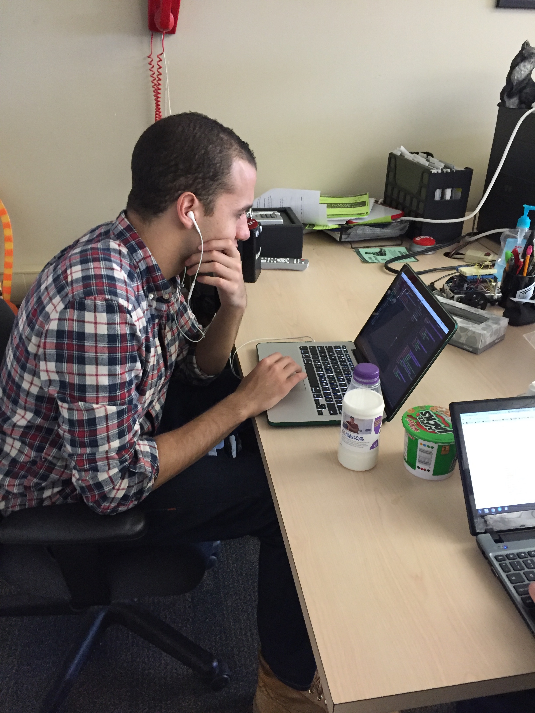

Vim & Tmux
Improving the dev workflow of neckbeards everywhere
A talk by Justin Peterson (@jmp3833)
http://justinpeterson.me/talks/vim-tmux.html"Get that Vim trash out of here"
What is Vim?
"Vim is an advanced text editor
that seeks to provide the power of the de-facto
Unix editor 'Vi', with a more complete feature set."
Well, What's Vi?
- Short for 'visual editor'
- Available on most unix platforms by default
- A standard that vim adheres to
How does Vim look?
The editor comes with countless config options. It can be as simple or verbose as the user desires

What makes Vim special?
Vim has been around since 1991, with Vi under it's original name beginning in 1979. There's a reason it's so popular.
Vim has no mouse support by default, similar to your Picos, Nanos, and Emacs(sss)
Vim is a modal text editor.
Whatcha mean by 'modal'?
Vim supports many modes, including Visual, Insert, and Standard
So, how do I use this thing without a mouse?
Looks like we're back to the days before GUI...
As a developer, it's actually more efficient to keep your mitts on the keyboard at all times!
THIS IS HUGE!
Benefits Of No Mouse & GUI
- this thing basically runs on anything with an OS
- can work on server distributions with no window manager
- plays incredibly well with SSH and other remote protocols

Pictured: Sad Swen250 Student
Yeah, but what about the stuff I lose?
- Painfully slow to scroll a cursor around vim without a mouse
- Where did my fancy syntax highlighting go?
- How am I going to get by without auto complete?
- What about my debugger?
Answer: Plugins
Plugin support for Vim is awesome! There are countless tools you can use to improve the experience. Take a look at http://vimawesome.com/ for some popular examples
How do plugins work?
- plugins and configurations for vim are stored in a .vimrc file
- the 'rc' in vimrc stands for "runcom" => "run commands"
- specifies commands to be executed before vim starts
Need a plugin that doesn't exist yet?
- No problem!
- Vimscript (a simple scripting language) is packaged with vim
- Many other plugins written in all sorts of languages
Keeping plugins in check
- Two popular plugin managers, Vundle and Pathogen
- Personally use vundle, but many devs are happy with both
- There are others out there, pick your favorite!
Using Vim well
- Learn touch typing before learning Vim
- Don't use the arrow keys!
- Get familiar with other modes besides 'insert'
- Use man pages and :vimtutor first to learn basics
- Personally recommend 'Practical Vim' for more advanced maneuvers
Vim Resources
- Practical Vim - Free Download
- Vim Adventures, an online game to learn vim. Costs $$ but many enjoy it
- Example config file. NOTE: It's much better to start from a clean slate than to copy!
- Fantastic blog post on vim philosophy
- Vim reference card. All of this can be found on the man page
- Plugins NERDTree, YouCompleteMe, and Syntastic
Improving a Vim workflow
Try working on a complex project you would normally use an IDE for completely in Vim. This works better in some languages than others.
Need multiple windows for shells, logs, and your editor? Try Tmux!
So, What's Tmux?
- Stands for "Terminal Multiplexer"
- Use to a bunch of programs in a single terminal using windows and panes
- Easily 'detach' from a Tmux session to pause your work and continue later
- Similar project, GNU Screen Provides a subset of Tmux features
Why the heck would I use this?
- I have that new fangled Iterm2, I can already split my windows
- I use that cool JetBrains IDE, I can already see my Terminal
- I like using Sublime text on one side, and my terminal on the other
- These solutions work... but can you easily run them on a server or without a mouse?
Pictured: Sad Swen250 Student
Configuring Tmux
- Uses a .tmux_conf file, similar to your new friend, the .vimrc
- Commands can be remapped for different key combinations, and to display additional info
Tmux Resources
Extra Credit: Tmuxinator
- Tmuxinator is a nifty plugin to manage multiple Tmux sessions
- The biggest overhead with Tmux is setting up your panes and windows every time you restart, with tmuxinator you don't have to!
- Requires some configuration, but it pays off in the end
Extra Credit: Powerline
- Powerline is a neat tool to get additional info in your vim and tmux sessions
- Well documented, but takes some time to configure!
Putting it all together
- Vim and Tmux aren't just for neckbeards after all!
- A little learning goes a long way
- Vim and Tmux can supplement a dev workflow or completely replace it